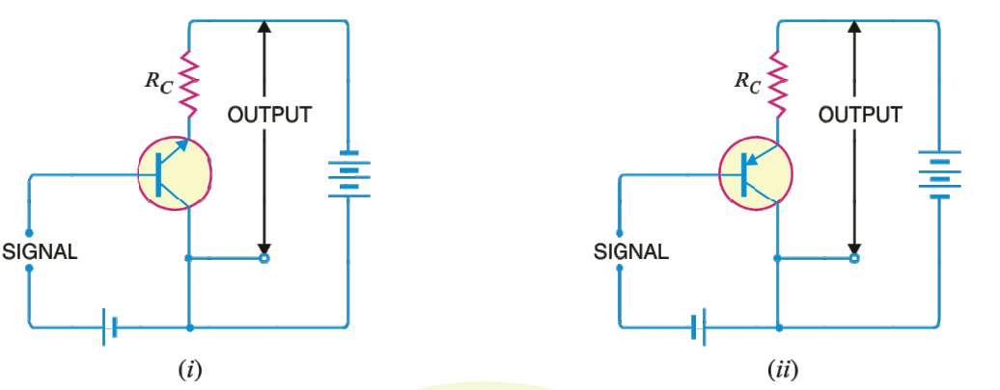
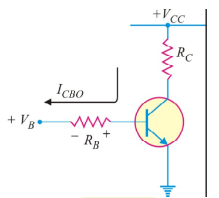

Chapter III: Transistors
A Tiny Giant: The Transistor Revolution
Imagine a world where radios were bulky furniture, computers filled entire rooms, and portable electronics were science fiction. That was the world before 1948. The reigning technology was the vacuum tube – large, fragile glass tubes that consumed significant power and generated a lot of heat. While capable of amplifying signals, they had limitations.
Figure 1: The Old Guard (Vacuum Tube) vs The New Challenger (Transistor)
Then, at Bell Telephone Laboratories, John Bardeen, Walter Brattain, and later William Shockley unveiled a revolutionary device. By cleverly adding a third layer to a simple crystal diode, they created something entirely new: the transistor. This tiny piece of semiconductor material could do what vacuum tubes did – amplify weak signals – but was far smaller, tougher, needed no warm-up time, consumed much less power, and had a potentially unlimited lifespan. It was the dawn of modern electronics.
The name itself tells a story. The device essentially transfers a signal across a varying resistor (from a low resistance input to a high resistance output). Hence, "trans-istor". In this chapter, we'll unravel the magic behind this tiny giant.
10. What is a Transistor? The Building Blocks
At its core, a transistor is a semiconductor device with three layers, forming two p-n junctions back-to-back. Think of it like making a sandwich with semiconductor materials.
A transistor consists of two p-n junctions formed by sandwiching either a p-type or n-type semiconductor between a pair of the opposite type.
This leads to two primary types:
- NPN Transistor: A thin layer of p-type semiconductor sandwiched between two layers of n-type semiconductor.
- PNP Transistor: A thin layer of n-type semiconductor sandwiched between two layers of p-type semiconductor.
Figure 8.1: Basic NPN and PNP Transistor Structures (OCR Page 2)
Meet the Terminals (Naming Conventions)
Each layer of the transistor has a connection point, called a terminal. These three terminals have specific names and roles (based on OCR 8.2):
- Emitter (E): This section 'emits' or supplies the majority charge carriers (electrons for NPN, holes for PNP). It's always heavily doped to provide a large supply of carriers. The Emitter-Base junction is always forward-biased in normal operation.
- Base (B): This is the very thin middle layer. Its job is to control the flow of charge carriers from the emitter to the collector. It's lightly doped and extremely thin, which is crucial for transistor action.
- Collector (C): This section 'collects' the charge carriers that make it through the base. The Collector-Base junction is always reverse-biased. It's typically the largest section physically because most of the heat generated during operation occurs here, and the larger area helps dissipate it. It is moderately doped.
Figure 2: A common transistor package, identifying the Emitter (E), Base (B), and Collector (C) leads.
Some Key Facts (Based on OCR 8.3)
- A transistor has three regions (Emitter, Base, Collector) and three terminals.
- It has two p-n junctions (Emitter-Base junction and Collector-Base junction). You can think of it like two diodes connected back-to-back.
- The Base is much thinner than the Emitter and Collector.
- The Emitter is heavily doped, the Base is lightly doped, and the Collector is moderately doped.
- In normal operation: Emitter-Base junction is forward-biased (low resistance), and the Collector-Base junction is reverse-biased (high resistance).
How Does it Work? Transistor Action Explained
The magic of the transistor lies in how these biased junctions interact, allowing a small current in the base circuit to control a much larger current in the collector circuit.
NPN Transistor in Action (Based on OCR 8.4)
Imagine an NPN transistor connected with the E-B junction forward-biased and the C-B junction reverse-biased:
- The forward bias on the E-B junction pushes a large number of electrons from the heavily doped n-type emitter into the thin, lightly doped p-type base. This flow constitutes the emitter current, \(I_E\).
- As these electrons enter the base, a few (typically less than 5%) find holes to recombine with. These recombining electrons flow out of the base terminal, forming the small base current, \(I_B\).
- Because the base is so thin and lightly doped, most electrons (over 95%) don't recombine. Instead, they diffuse across the thin base and are swept into the collector region by the strong reverse bias of the C-B junction.
- These electrons flow out of the collector terminal, forming the large collector current, \(I_C\).
Crucially, almost all the emitter current flows into the collector. The base current is just the small difference. This leads to the fundamental transistor current relationship:
A small change in \(I_B\) (caused by a small change in the E-B forward bias voltage) results in a large change in \(I_C\), demonstrating the control action.
Figure 8.4: NPN Transistor Action (OCR Page 5)
PNP Transistor in Action (Based on OCR 8.4)
The process is similar for a PNP transistor, but the charge carriers are holes, and the bias polarities are reversed:
- Forward bias on the E-B junction injects holes from the p-type emitter into the n-type base (\(I_E\)).
- A small number of holes recombine with electrons in the base (\(I_B\)).
- Most holes are swept across the reverse-biased C-B junction into the collector (\(I_C\)).
The same current relationship \( I_E = I_B + I_C \) holds. Remember, conventional current direction follows hole movement.
Figure 8.5: PNP Transistor Action (OCR Page 5)
The Essence: Transfer Resistor
The key takeaway is that the transistor takes the input current (mostly \(I_E\)) flowing through the low-resistance forward-biased E-B junction and effectively transfers it to the high-resistance reverse-biased C-B junction (as \(I_C\)). This ability to control current in a high-resistance circuit using a low-resistance input is the foundation of its amplifying capability.
Speaking the Language: Transistor Symbols (OCR 8.5)
Drawing layered diagrams is cumbersome. We use schematic symbols for transistors:
Figure 8.6: NPN (i) and PNP (ii) Schematic Symbols (OCR Page 6)
Key points about the symbols:
- The terminal with the arrow is always the Emitter.
- The central terminal (without the arrow) is the Base.
- The remaining terminal is the Collector.
- The arrow indicates the direction of conventional current flow for the emitter when the E-B junction is forward biased.
- NPN: Arrow points Not iN (outwards). Conventional current flows out of the emitter.
- PNP: Arrow Points iN (inwards). Conventional current flows into the emitter.
11. Connecting the Dots: Transistor Configurations (OCR 8.7)
A transistor has three terminals (E, B, C), but for most circuit applications like amplification, we need four connection points: two for the input signal and two for the output signal. How do we manage this?
The solution is to make one of the three transistor terminals common to both the input and output circuits. This leads to three fundamental ways to connect a transistor:
- Common Base (CB): The base terminal is common to input and output. Input applied between Emitter and Base, Output taken between Collector and Base.
- Common Emitter (CE): The emitter terminal is common. Input applied between Base and Emitter, Output taken between Collector and Emitter.
- Common Collector (CC): The collector terminal is common. Input applied between Base and Collector, Output taken between Emitter and Collector. (Also known as Emitter Follower).
Each configuration has unique characteristics regarding input resistance, output resistance, current gain, and voltage gain, making them suitable for different applications. Regardless of the configuration, the fundamental biasing rule applies: the E-B junction must be forward-biased, and the C-B junction must be reverse-biased for normal amplifier operation (active region).
Common Base (CB) Configuration (OCR 8.8, 8.9)
Figure 8.9: Common Base NPN (i) and PNP (ii) Circuits (OCR Page 8)
Characteristics:
- Current Gain (\(\alpha\)): Defined as the ratio of change in collector current to the change in emitter current at constant \(V_{CB}\).
\[ \alpha = \frac{\Delta I_C}{\Delta I_E} \bigg|_{V_{CB} = \text{constant}} \]Since \(I_C\) is always slightly less than \(I_E\), \(\alpha\) is always slightly less than 1 (typically 0.9 to 0.99). There is no current gain, in fact, there's a slight loss.
- Collector Current Expression: The total collector current includes the portion of emitter current that reaches it (\(\alpha I_E\)) plus the small leakage current (\(I_{CBO}\)) that flows across the reverse-biased C-B junction when the emitter is open.
\[ I_C = \alpha I_E + I_{CBO} \]Where \(I_{CBO}\) is the Collector-to-Base current with the emitter Open.
Figure 8.10: Illustration of Leakage Current \(I_{CBO}\) (OCR Page 9)
Using \(I_E = I_C + I_B\), we can also express \(I_C\) in terms of \(I_B\):\[ I_C = \frac{\alpha}{1-\alpha} I_B + \frac{1}{1-\alpha} I_{CBO} \] - Input Characteristics: A plot of \(I_E\) vs \(V_{EB}\) at constant \(V_{CB}\). Looks like a forward-biased diode curve. Shows very low input resistance (a few ohms to tens of ohms) because the E-B junction is forward biased.
Figure 8.14: Typical CB Input Characteristics (OCR Page 11)
- Output Characteristics: A plot of \(I_C\) vs \(V_{CB}\) at constant \(I_E\). Shows that \(I_C\) is almost independent of \(V_{CB}\) (except at very low voltages) and is mainly determined by \(I_E\). Indicates very high output resistance (hundreds of kΩ to MΩ) due to the reverse-biased C-B junction.
Figure 8.15: Typical CB Output Characteristics (OCR Page 12)
- Summary: No current gain (\(\alpha < 1\)), high voltage gain possible, low input resistance, very high output resistance. Good high-frequency response and temperature stability. Rarely used for general amplification but finds use in high-frequency circuits.
Common Emitter (CE) Configuration (OCR 8.10-8.12)
Figure 8.16: Common Emitter NPN (i) and PNP (ii) Circuits (OCR Page 13)
This is the workhorse configuration, used in ~90-95% of transistor applications.
Characteristics:
- Current Gain (\(\beta\)): Defined as the ratio of change in collector current to the change in base current at constant \(V_{CE}\).
\[ \beta = \frac{\Delta I_C}{\Delta I_B} \bigg|_{V_{CE} = \text{constant}} \]Since \(I_C\) is much larger than \(I_B\), \(\beta\) is significantly greater than 1 (typically 20 to 500). This configuration provides substantial current gain.
- Relation between \(\alpha\) and \(\beta\): Using \(I_E = I_B + I_C\) and the definitions, we can derive:
\[ \beta = \frac{\alpha}{1-\alpha} \quad \text{and} \quad \alpha = \frac{\beta}{\beta+1} \]As \(\alpha\) approaches 1, \(\beta\) approaches infinity, highlighting the high gain potential of CE.
- Collector Current Expression: Similar to CB, the total collector current includes the current controlled by the base (\(\beta I_B\)) plus a leakage current. This leakage current, \(I_{CEO}\), flows from Collector to Emitter with the base Open.
Figure 8.17: Concept of Leakage Current \(I_{CEO}\) (OCR Page 14)
The expression is:\[ I_C = \beta I_B + I_{CEO} \]It can be shown that \(I_{CEO}\) is much larger than \(I_{CBO}\):\[ I_{CEO} = \frac{I_{CBO}}{1-\alpha} = (\beta + 1) I_{CBO} \]This means the CE configuration amplifies leakage current, which can be a disadvantage, especially with temperature changes. - Input Characteristics: A plot of \(I_B\) vs \(V_{BE}\) at constant \(V_{CE}\). Still looks like a forward-biased diode, but \(I_B\) increases less steeply with \(V_{BE}\) compared to \(I_E\) in CB. Input resistance is higher than CB (few hundred Ω to few kΩ).
Figure 8.30: Typical CE Input Characteristics (OCR Page 21)
- Output Characteristics: A plot of \(I_C\) vs \(V_{CE}\) at constant \(I_B\). Shows that \(I_C\) is strongly controlled by \(I_B\) and is relatively independent of \(V_{CE}\) above the "knee voltage". The curves have a noticeable upward slope compared to CB, indicating a lower output resistance (tens of kΩ).
Figure 8.31: Typical CE Output Characteristics (OCR Page 21)
- Summary: High current gain (\(\beta\)), high voltage gain, moderate input resistance, moderate output resistance. Provides significant power gain. It inverts the phase of the input signal. Most widely used configuration due to its overall gain characteristics.
Common Collector (CC) Configuration (Emitter Follower) (OCR 8.13)
Figure 8.32: Common Collector NPN (i) and PNP (ii) Circuits (OCR Page 22)
Characteristics:
- Current Gain (\(\gamma\)): Defined as the ratio of change in emitter current to the change in base current at constant \(V_{EC}\).
\[ \gamma = \frac{\Delta I_E}{\Delta I_B} \bigg|_{V_{EC} = \text{constant}} \]Using \(I_E = I_B + I_C\) and the relations for \(\alpha\) and \(\beta\), we find:\[ \gamma = \frac{1}{1-\alpha} = \beta + 1 \]The current gain is high, similar to \(\beta\).
- Voltage Gain: Always slightly less than 1. The output voltage at the emitter "follows" the input voltage at the base, hence the name "Emitter Follower". It does not provide voltage amplification.
- Input Resistance: Very high (hundreds of kΩ).
- Output Resistance: Very low (tens of Ω).
- Summary: High current gain (\(\gamma \approx \beta\)), voltage gain < 1 (no voltage amplification), very high input resistance, very low output resistance. Does not invert phase. Primarily used for impedance matching – connecting a high-impedance source to a low-impedance load without losing signal strength.
Putting it Together: Comparing the Connections (OCR 8.14)
Here's a summary table comparing the key characteristics:
| Characteristic | Common Base (CB) | Common Emitter (CE) | Common Collector (CC) |
|---|---|---|---|
| Input Resistance (Ri) | Very Low (~10-100 Ω) | Low/Moderate (~1kΩ) | Very High (~100s kΩ) |
| Output Resistance (Ro) | Very High (~MΩ) | High/Moderate (~50kΩ) | Very Low (~50 Ω) |
| Current Gain (Ai) | < 1 (\(\alpha\)) | High (\(\beta\)) | High (\(\gamma \approx \beta\)) |
| Voltage Gain (Av) | High (~150) | Highest (~500) | < 1 |
| Phase Inversion | No | Yes (180°) | No |
| Typical Applications | High-frequency circuits, Impedance matching (rarely) | General purpose amplification (Audio, RF) | Impedance matching, Buffer stages |
12. The Main Act: Transistor as an Amplifier (CE Focus) (OCR 8.6, 8.16)
Let's revisit how the most common configuration, the Common Emitter (CE), acts as an amplifier.
Figure 8.33: Common Emitter Amplifier Circuit (OCR Page 25)
The basic idea relies on the transistor's ability to use a small change in base current (\(I_B\)) to cause a large change in collector current (\(I_C\)).
- Biasing: First, a DC voltage (\(V_{BB}\) in the diagram, though usually derived differently in practice, see Biasing section) sets up a quiescent (no signal) base current \(I_B\). This establishes a corresponding quiescent collector current \(I_C = \beta I_B\) and a quiescent collector-emitter voltage \(V_{CE} = V_{CC} - I_C R_C\). This is the operating point (Q-point).
- Signal Input: A small AC input signal is applied to the base, usually superimposed on the DC bias voltage.
- Base Current Variation: During the positive half-cycle of the input signal, the forward bias on the E-B junction increases slightly. This causes the base current \(I_B\) to increase. During the negative half-cycle, the forward bias decreases, causing \(I_B\) to decrease.
- Collector Current Amplification: Since \(I_C = \beta I_B\), the small changes in \(I_B\) result in much larger changes in \(I_C\). The collector current varies above and below its quiescent value, faithfully following the input signal's pattern but with \(\beta\) times the magnitude.
- Output Voltage: The varying collector current \(I_C\) flows through the collector load resistor \(R_C\). The voltage drop across \(R_C\) is \(I_C R_C\). The output voltage, taken at the collector (\(V_{CE}\)), is given by \(V_{CE} = V_{CC} - I_C R_C\).
- Voltage Amplification: When \(I_C\) increases (due to positive input signal), the drop \(I_C R_C\) increases, causing \(V_{CE}\) to decrease. When \(I_C\) decreases (due to negative input signal), the drop \(I_C R_C\) decreases, causing \(V_{CE}\) to increase. Because \(R_C\) is typically much larger than the input resistance, the change in output voltage (\(\Delta V_{CE}\)) is much larger than the change in input voltage (\(\Delta V_{BE}\)), resulting in voltage amplification. Note the 180° phase inversion: a positive-going input causes a negative-going output.
Illustration (Based on OCR Page 7)
Suppose \(R_C = 5 \, k\Omega\). Let a 0.1V change in the input signal cause a 1mA change in emitter current (\(\Delta I_E \approx \Delta I_C\)).
The change in collector current is \(\Delta I_C = 1 \, mA\).
The change in output voltage across \(R_C\) is \(\Delta V_{out} = \Delta I_C \times R_C = 1 \, mA \times 5 \, k\Omega = 5 \, V\).
The voltage amplification (\(A_v\)) is \(\frac{\Delta V_{out}}{\Delta V_{in}} = \frac{5 \, V}{0.1 \, V} = 50\).
The transistor amplified the voltage by a factor of 50!
13. Keeping it Real: Faithful Amplification (OCR 9.1)
Amplification is great, but just making a signal bigger isn't enough. We want the output signal to be a larger replica of the input signal, without any distortion in its shape. This is called faithful amplification.
Faithful Amplification is the process of increasing the strength (amplitude) of a signal without changing its fundamental shape or characteristics.
Figure 9.1: Illustration of Faithful (ii) vs Unfaithful (i) Amplification (OCR Page 44)
To achieve faithful amplification, the transistor must operate correctly throughout the entire cycle of the input signal. This requires satisfying three crucial conditions:
- Proper Zero Signal Collector Current (\(I_C\)): There must be a DC collector current flowing even when no AC signal is applied. This ensures that the transistor remains 'on' during the negative half-cycle of the input signal, preventing it from cutting off. The zero signal \(I_C\) must be large enough to accommodate the negative swing of the signal current.
- Minimum Base-Emitter Voltage (\(V_{BE}\)) at all times: The E-B junction must remain forward-biased throughout the signal cycle. For Germanium transistors, \(V_{BE}\) should not drop below ~0.5V; for Silicon, it should not drop below ~0.7V. If it does, that part of the signal won't be amplified properly, leading to distortion.
- Minimum Collector-Emitter Voltage (\(V_{CE}\)) at all times: The C-B junction must remain reverse-biased. This means \(V_{CE}\) must not fall below the "knee voltage" (\(V_{knee}\)). For Germanium, \(V_{knee} \approx 0.5V\); for Silicon, \(V_{knee} \approx 1V\). If \(V_{CE}\) drops below this, the transistor enters saturation, \(\beta\) decreases, and amplification becomes non-linear, causing distortion.
Ensuring these conditions are met is the primary goal of Transistor Biasing.
13. Setting the Stage: Transistor Biasing (OCR 9.2)
We've seen that for a transistor to amplify faithfully, we need to establish specific DC operating conditions even before the AC signal arrives. This process of setting up the correct DC voltages and currents is called transistor biasing.
Transistor Biasing is the process of applying DC voltages to a transistor circuit to establish a specific, stable DC operating point (Q-point) – defined by \(I_C\) and \(V_{CE}\) – such that the transistor operates in the active region and can amplify an AC signal faithfully.
The circuit used to achieve this is called a biasing circuit. Its main goals are:
- Set the desired DC collector current (\(I_C\)).
- Set the desired DC collector-emitter voltage (\(V_{CE}\)).
- Ensure the E-B junction is always forward-biased.
- Ensure the C-B junction is always reverse-biased.
- Keep the operating point stable despite variations.
The Challenge: Parameter Variations and Stability (OCR 9.3, 9.4)
Life would be simple if all transistors of the same type (e.g., all BC547s) were identical. But they aren't! Manufacturing variations mean that parameters like \(\beta\) and \(V_{BE}\) can vary significantly even between transistors from the same batch. Furthermore, these parameters change with temperature:
- \(\beta\) increases with temperature.
- \(V_{BE}\) decreases with temperature (by about 2.5mV per °C).
- \(I_{CBO}\) (leakage current) increases dramatically with temperature (doubling roughly every 10°C for Ge, 12°C for Si).
If our biasing circuit is sensitive to these parameters, the Q-point (\(I_C\), \(V_{CE}\)) will drift when the temperature changes or if we replace the transistor. This drift can push the transistor towards cut-off or saturation, destroying faithful amplification.
A particularly dangerous effect is Thermal Runaway. As temperature rises, \(I_{CBO}\) increases. This increases \(I_C\) (recall \(I_C = \beta I_B + (\beta+1)I_{CBO}\)). Increased \(I_C\) causes more power dissipation (\(P_D = V_{CE} I_C\)) at the collector junction, further increasing the temperature. This positive feedback loop can quickly escalate, leading to excessive current and destruction of the transistor.
Therefore, a crucial requirement for any practical biasing circuit is Stabilisation.
Stabilisation is the process of designing a biasing circuit such that the operating point (\(I_C\), \(V_{CE}\)) remains relatively fixed and independent of variations in transistor parameters (\(\beta\), \(V_{BE}\), \(I_{CBO}\)) and temperature changes.
Measuring Stability: The Stability Factor (S) (OCR 9.6)
We can quantify how well a circuit stabilises the collector current against changes in leakage current using the Stability Factor, S.
The Stability Factor (S) is defined as the rate of change of collector current (\(I_C\)) with respect to the reverse saturation current (\(I_{CO}\) or \(I_{CBO}\)), keeping \(\beta\) and \(I_B\) constant (though the latter constraint is often relaxed in derivations).
A lower value of S indicates better stability. An ideal circuit would have S = 1 (meaning \(I_C\) changes only by the same amount as \(I_{CO}\)), but this is practically unattainable. Values below 25 are generally considered acceptable, with lower values being better. The general expression derived earlier was:
This shows that stability depends on how the base current \(I_B\) changes in response to changes in collector current \(I_C\). Good biasing circuits use negative feedback mechanisms to ensure that if \(I_C\) tries to increase, \(I_B\) is automatically reduced, thus counteracting the change.
14. Methods of Transistor Biasing
Several methods exist to provide DC bias using only the single main power supply (\(V_{CC}\)). We will focus on the two mentioned in the syllabus: Base Resistor and Voltage Divider.
Base Resistor Method (Fixed Bias) (OCR 9.8)
This is the simplest biasing method.
Figure 9.6: Base Resistor Biasing (OCR Page 50)
Circuit Analysis: A high-value resistor \(R_B\) is connected between the positive supply \(V_{CC}\) and the base.
- Applying Kirchhoff's Voltage Law (KVL) to the base-emitter loop (ABENA in the diagram): \[ V_{CC} = I_B R_B + V_{BE} \]
- Solving for the base resistor \(R_B\): \[ R_B = \frac{V_{CC} - V_{BE}}{I_B} \] Since \(I_C = \beta I_B\), we need \(I_B = I_C / \beta\). So, to set a desired \(I_C\), we choose \(R_B\) based on the known \(V_{CC}\), \(V_{BE}\) (approx 0.7V for Si, 0.3V for Ge), and the transistor's \(\beta\). \[ R_B = \frac{V_{CC} - V_{BE}}{I_C / \beta} \]
- The collector-emitter voltage is found from the collector loop: \[ V_{CE} = V_{CC} - I_C R_C \]
- Stability Factor: In this circuit, \(I_B = (V_{CC} - V_{BE}) / R_B\), which is independent of \(I_C\). Therefore, \(dI_B / dI_C = 0\). Plugging this into the general stability factor formula: \[ S = \frac{\beta + 1}{1 - \beta (0)} = \beta + 1 \]
Advantages:
- Extremely simple circuit and calculations.
- Requires only one resistor (\(R_B\)) for biasing.
Disadvantages:
- Very poor stability: The stability factor S = \(\beta + 1\) is large (e.g., if \(\beta=100\), S=101). This means \(I_C\) is highly sensitive to changes in \(I_{CO}\) and \(\beta\).
- High risk of thermal runaway: Due to the poor stability.
- The Q-point is highly dependent on \(\beta\), which varies significantly.
Because of its poor stability, the fixed bias method is rarely used for linear amplifiers but might be found in switching circuits where stability is less critical.
Figure 9.12: How \(I_{CBO}\) affects the base voltage in fixed bias (OCR Page 56)
Leakage current \(I_{CBO}\) flowing *through* \(R_B\) can slightly alter the base voltage, further contributing to Q-point instability, though this effect is often minor compared to the \(\beta\) dependence.
Voltage Divider Bias Method (Self Bias) (OCR 9.12)
This is the most popular and practical biasing method due to its excellent stability.
Figure 9.24: Voltage Divider Biasing (OCR Page 64)
Circuit Analysis: Two resistors, \(R_1\) and \(R_2\), are connected across the supply \(V_{CC}\), forming a voltage divider. Their junction is connected to the base. An emitter resistor \(R_E\) is also included.
- Base Voltage (\(V_2\)): The voltage divider sets a fixed voltage at the base (ideally). If the current drawn by the base (\(I_B\)) is negligible compared to the current flowing through \(R_1\) and \(R_2\) (\(I_1\)), then: \[ V_2 \approx \frac{R_2}{R_1 + R_2} V_{CC} \] (For this approximation to hold, we generally design so that \(R_2 \le \frac{1}{10} \beta R_E\)).
- Emitter Voltage (\(V_E\)): The emitter voltage is simply the base voltage minus the base-emitter drop: \[ V_E = V_2 - V_{BE} \]
- Emitter Current (\(I_E\)): This is determined by the emitter voltage and the emitter resistor: \[ I_E = \frac{V_E}{R_E} = \frac{V_2 - V_{BE}}{R_E} \]
- Collector Current (\(I_C\)): Since \(I_C \approx I_E\): \[ I_C \approx \frac{V_2 - V_{BE}}{R_E} \] Notice that if \(V_2\) is stable and much larger than changes in \(V_{BE}\), then \(I_C\) becomes largely independent of transistor parameters (\(\beta\), \(V_{BE}\)). This is the key to its stability.
- Collector-Emitter Voltage (\(V_{CE}\)): Applying KVL to the collector-emitter loop: \[ V_{CC} = I_C R_C + V_{CE} + I_E R_E \] Since \(I_C \approx I_E\): \[ V_{CE} = V_{CC} - I_C (R_C + R_E) \]
- Stability Factor (Exact Analysis using Thevenin): We can replace the voltage divider (\(V_{CC}, R_1, R_2\)) with its Thevenin equivalent circuit looking into the base.
The Thevenin Voltage \(E_0\) (same as \(V_2\) above): \(E_0 = \frac{R_2}{R_1 + R_2} V_{CC}\)
The Thevenin Resistance \(R_0\) (resistance looking back into the divider with \(V_{CC}\) grounded): \(R_0 = R_1 || R_2 = \frac{R_1 R_2}{R_1 + R_2}\)

Figure 9.25: Voltage Divider circuit and its Thevenin equivalent (Conceptual based on OCR 9.19)
The stability factor is then given by (OCR 9.13): \[ S = (\beta + 1) \frac{1 + R_0/R_E}{\beta + 1 + R_0/R_E} \] If \(R_0/R_E\) is small (achieved by making \(R_1, R_2\) small and/or \(R_E\) large), then S approaches 1, indicating excellent stability.
Stabilisation Action: The emitter resistor \(R_E\) is crucial for stability. If \(I_C\) tries to increase (e.g., due to temperature), \(I_E\) also increases. This increases the voltage drop across \(R_E\) (\(V_E = I_E R_E\)). Since the base voltage \(V_2\) is held relatively constant by the divider, the base-emitter voltage \(V_{BE} = V_2 - V_E\) decreases. A decrease in \(V_{BE}\) reduces the base current \(I_B\), which in turn reduces \(I_C\), counteracting the initial tendency to increase. This negative feedback mechanism provided by \(R_E\) stabilises the Q-point.
Advantages:
- Excellent Q-point stability against variations in \(\beta\) and temperature.
- Predictable operating point.
Disadvantages:
- More components than fixed bias.
- Calculations can be slightly more complex (especially using Thevenin).
Due to its superior stability, voltage divider bias is the preferred method for linear amplifiers.
Design of Voltage Divider Bias Circuit (OCR 9.14)
Designing a voltage divider bias circuit involves choosing appropriate values for \(R_1, R_2, R_C, R_E\). Here's a common design procedure (for low power transistors):
- Choose \(R_E\): Typically selected in the range of 500Ω to 1kΩ. Higher \(R_E\) gives better stability but requires higher \(V_{CC}\) or reduces the available output voltage swing.
- Choose Zero Signal \(I_C\): Often set around 1mA for small-signal amplifiers, or determined based on desired output swing (aiming for midpoint biasing).
- Determine \(V_E\): Calculate \(V_E = I_E R_E \approx I_C R_E\).
- Determine \(V_2\): Calculate \(V_2 = V_E + V_{BE}\) (use \(V_{BE} \approx 0.7V\) for Si).
- Choose \(R_2\): Select \(R_2\) such that the divider current \(I_1\) is significantly larger than the base current \(I_B\). A common rule is \(I_1 \ge 10 I_B\). Calculate \(I_B = I_C / \beta\). Then \(I_1 = V_2 / R_2\). So, choose \(R_2 \le V_2 / (10 I_B)\). Or, equivalently, ensure \(R_2 \le \frac{1}{10} \beta R_E\).
- Determine \(R_1\): The voltage across \(R_1\) is \(V_{CC} - V_2\), and the current through it is \(I_1 = I_2 + I_B \approx I_1 = V_2 / R_2\). Calculate \(R_1 = (V_{CC} - V_2) / I_1\).
- Choose \(R_C\): Select \(R_C\) to set the desired \(V_{CE}\). Often, we aim for midpoint biasing where \(V_{CE} \approx V_{CC}/2\). The voltage drop across \(R_C\) and \(R_E\) should be roughly half of \(V_{CC}\). \(R_C = (V_{CC} - V_{CE} - V_E) / I_C\). Ensure \(V_{CE}\) remains above the knee voltage under all signal conditions.
Visualizing Operation: Load Line Analysis (OCR 8.17)
How do the transistor's characteristics interact with the external circuit components (\(V_{CC}\), \(R_C\), \(R_E\))? The DC Load Line provides a powerful graphical tool.
Consider the output loop equation for a CE amplifier (can include \(R_E\)):
\[ V_{CE} = V_{CC} - I_C (R_C + R_E) \]This is a linear equation relating the output current (\(I_C\)) and output voltage (\(V_{CE}\)). It represents all possible operating points allowed by the external circuit components, regardless of the transistor itself. We can plot this line on the transistor's output characteristics (\(I_C\) vs \(V_{CE}\) curves).
Drawing the DC Load Line:
- Find the \(V_{CE}\) intercept (Cut-off point): Assume \(I_C = 0\). Then, \(V_{CE} = V_{CC}\). This gives point B on the horizontal axis (\(V_{CE} = V_{CC}\), \(I_C = 0\)).
- Find the \(I_C\) intercept (Saturation point): Assume \(V_{CE} = 0\). Then, \(I_C = V_{CC} / (R_C + R_E)\). This gives point A on the vertical axis (\(V_{CE} = 0\), \(I_C = V_{CC} / (R_C + R_E)\)).
- Draw the line: Connect points A and B with a straight line. This is the DC Load Line.
Figure 8.35: Constructing the DC Load Line on Output Characteristics (OCR Page 26)
The Operating Point (Q-point) (OCR 8.18)
The transistor must simultaneously satisfy its own internal characteristics (represented by the family of curves for different \(I_B\)) and the constraints imposed by the external circuit (represented by the load line). The actual DC operating point (Quiescent point or Q-point) is the single point where both conditions are met.
The Operating Point (Q-point) is the intersection of the DC Load Line with the specific output characteristic curve corresponding to the established DC base current (\(I_B\)). Its coordinates define the zero-signal values of \(I_C\) and \(V_{CE}\).
Figure 8.37: The Q-point as the intersection of load line and base current curve (OCR Page 27)
When an AC signal is applied, the instantaneous operating point swings along the load line, above and below the Q-point.
Cut-off and Saturation Regions (OCR 8.22)
The ends of the load line represent two extreme operating conditions:
- Cut-off: Where the load line intersects the \(I_B = 0\) curve (or very close to it). Here, \(I_C \approx 0\) and \(V_{CE} \approx V_{CC}\). Both E-B and C-B junctions are effectively reverse-biased (or zero-biased). The transistor acts like an open switch.
- Saturation: Where the load line intersects the characteristic curve corresponding to the maximum base current (\(I_{B(sat)}\)) before \(I_C\) stops increasing significantly. Here, \(I_C\) is maximum (\(I_{C(sat)} \approx V_{CC} / (R_C+R_E)\)) and \(V_{CE}\) is minimum (\(V_{CE(sat)} \approx V_{knee}\), close to 0V). Both E-B and C-B junctions become forward-biased. The transistor acts like a closed switch.
- Active Region: The region along the load line between cut-off and saturation. Here, the E-B junction is forward-biased, and the C-B junction is reverse-biased. This is the region required for linear amplification.
Figure 8.49: Cut-off and Saturation points (OCR Page 34)
Figure 8.50: Transistor States (OCR Page 35)
Figure 8.51: Equivalent behaviour in Active, Cut-off, and Saturation (OCR Page 35)
Finding the Sweet Spot: Mid-Point Biasing (OCR 9.15)
For maximum undistorted output signal swing, where should we place the Q-point on the load line? Ideally, right in the middle!
An amplifier is midpoint biased when the Q-point is located at the center of the DC load line.
At the midpoint:
- \( I_{C(Q)} = \frac{1}{2} I_{C(max)} = \frac{1}{2} \frac{V_{CC}}{R_{DC}} \) (where \( R_{DC} = R_C + R_E \))
- \( V_{CE(Q)} = \frac{1}{2} V_{CE(max)} = \frac{1}{2} V_{CC} \)
Figure 9.36: Midpoint Biasing (Q at center) (OCR Page 75)
Why is this desirable? It allows the collector current and collector-emitter voltage to swing equally above and below their quiescent values before hitting the limits of saturation or cut-off. This maximizes the possible symmetrical output swing without clipping the signal.
Figure 9.37: Optimum signal swing with midpoint biasing (OCR Page 76)
If the Q-point is too high (close to saturation), the positive swing of the output voltage (negative swing of \(I_C\)) might be clipped at cut-off. If the Q-point is too low (close to cut-off), the negative swing of the output voltage (positive swing of \(I_C\)) might be clipped at saturation. Midpoint biasing provides the largest possible room for symmetrical signal variation.
Handling the Heat: Power Rating of Transistors (OCR 8.23)
When a transistor operates, current flows through it, and there's a voltage drop across it. This means power is dissipated, primarily as heat, mostly at the collector-base junction (since it handles the largest voltage and current product).
The Power Rating of a transistor is the maximum power (\(P_{D(max)}\)) that the transistor can safely dissipate without being damaged by excessive heat.
The power dissipated is approximately:
(Power at the E-B junction is usually negligible due to the small \(V_{BE}\)).
When designing a circuit, you must ensure that the product of the maximum expected \(V_{CE}\) and \(I_C\) does not exceed the transistor's \(P_{D(max)}\) rating found on its datasheet.
For power transistors, it's often useful to plot the Maximum Power Dissipation Curve on the output characteristics. This curve represents the boundary \(V_{CE} \times I_C = P_{D(max)}\). The operating point must always remain below this curve to ensure safe operation.
Figure 8.60: Maximum Power Dissipation Curve (OCR Page 41)
Silicon vs. Germanium: The Material Choice (OCR 9.18)
While both Silicon (Si) and Germanium (Ge) are semiconductors used for transistors, Silicon has become the dominant material. Here's why:
- Lower Leakage Current (\(I_{CBO}\)): Silicon has significantly lower intrinsic leakage current at room temperature compared to Germanium. This leads to better performance and stability.
- Better Temperature Stability: \(I_{CBO}\) in Silicon increases less rapidly with temperature than in Germanium. Silicon circuits are more stable over a wider temperature range.
- Higher Operating Temperature: Silicon can operate reliably up to about 150°C, whereas Germanium structures start to break down around 70-100°C.
- Higher PIV Ratings: Silicon diodes and transistors generally tolerate much higher Peak Inverse Voltages.
The main disadvantage of Silicon is its higher base-emitter voltage (\(V_{BE} \approx 0.7V\)) compared to Germanium (\(V_{BE} \approx 0.3V\)), meaning slightly more voltage is needed to turn it on. However, given Silicon's substantial advantages in stability and temperature performance, it's the preferred choice for nearly all modern semiconductor applications.